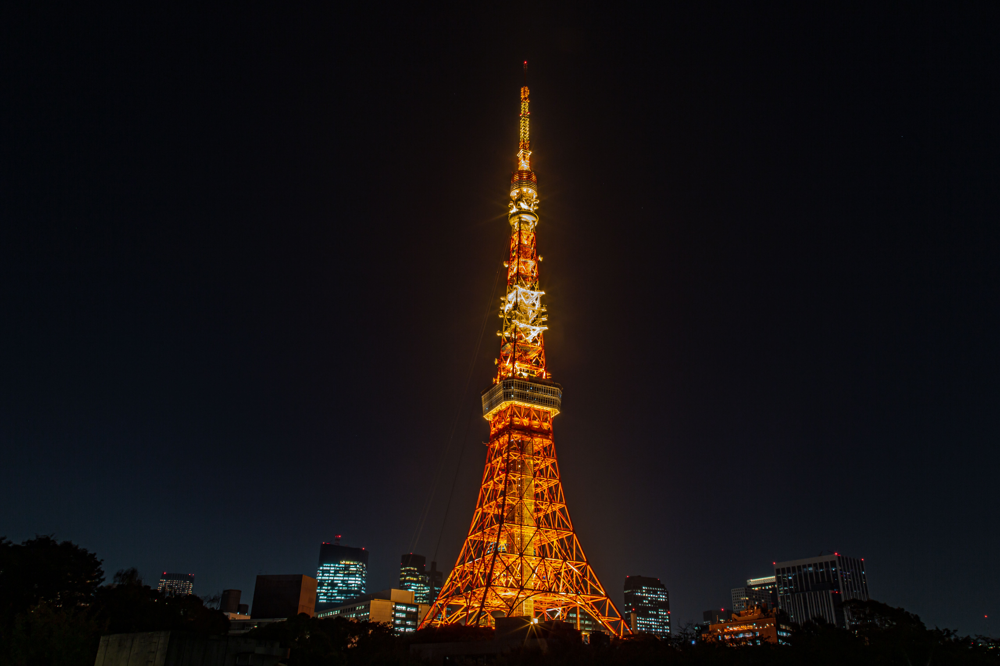
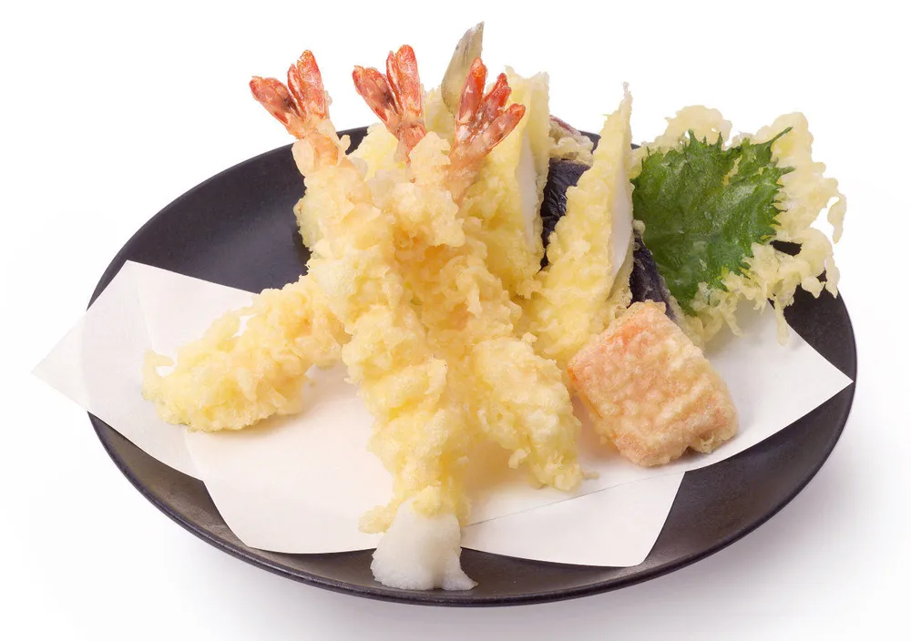
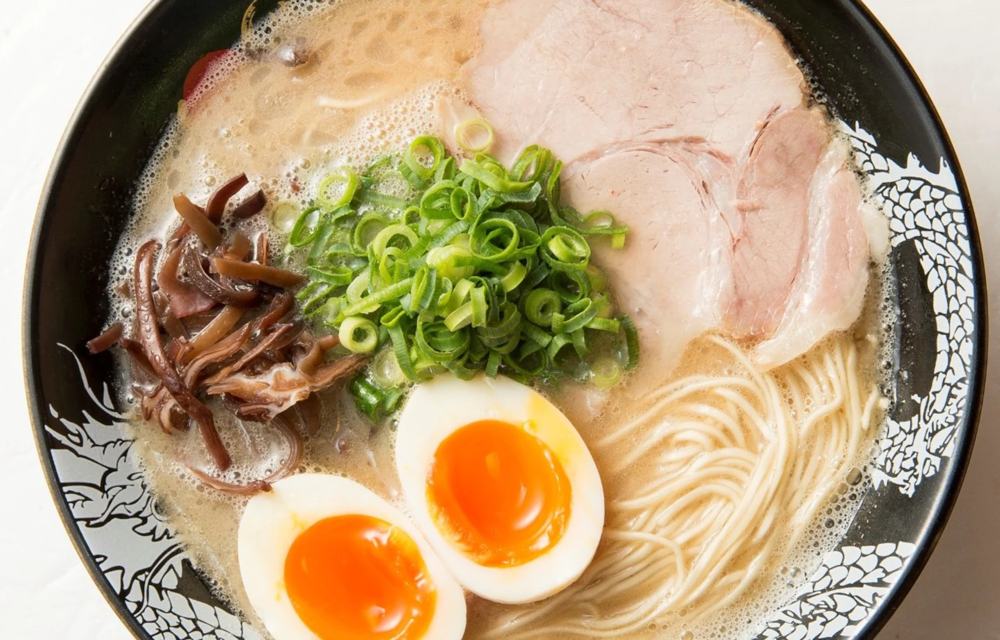

일본의 관광지

도쿄
도쿄는 일본의 수도로 스카이 타워나 도쿄 타워같은 여러 유명한 관광지가 있고
긴자나 아키하바라,도쿄 국립 근대미술관 같은 여러 유명한 관광 명소가 있다.
 긴자
긴자
 아키하바라
도쿄 국립 근대미술관
아키하바라
도쿄 국립 근대미술관
일본의 음식
일본의 대표적인 음식은 덴푸라, 라멘 , 초밥, 오코노미야키, 타코야키 등 많은 음식들이 있는데
우동이나 초밥,타코야키 같은 음식들은 우리나라에서도 쉽게 찾아볼 수 있을 만큼 널리 퍼져있다.
덴푸라
라멘
메인으로 돌아가기